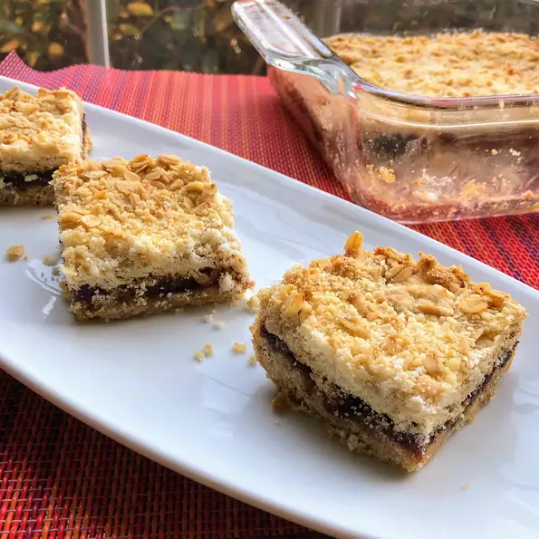

Date Crumble

Description
A date square is a Canadian dessert or bar cookie made of cooked dates
with an oatmeal crumb topping.
In Western Canada it is known as matrimonial cake. In Eastern Canada it
can also be known as date crumbles.
Ingridients (12 servings)
Filling:
- 1 cup pitted and chopped dates, or to taste
- ¼ cup cold water, or as needed
- 2 tablespoons white sugar
- 1 teaspoon vanilla extract, or more to taste
Crumble:
- 1 ⅜ cups self-rising flour
- ¾ cup margarine
- 1 cup oats
- ¾ cup white sugar
Steps:
-
Preheat oven to 355 degrees F (180 degrees C). Grease a 9-inch square
baking dish
-
Combine dates, water, 2 tablespoons sugar, and vanilla extract in a
saucepan; cook and stir over medium heat until filling mixture forms a
paste, about 5 minutes.
Add more water if filling gets too thick.
Remove saucepan from heat and cool
-
Place flour in a bowl and rub margarine into flour using your hands
until mixture resembles bread crumbs; stir in oats and 3/4 cup sugar.
Press 1/2 of the mixture into the prepared baking dish. Spoon
filling over over crust, smoothing with the back of the spoon, leaving a
thin border between the filling and the edge of the dish.
Sprinkle
the remaining crumble mixture over filling.
-
Bake in the preheated oven until top is golden brown, 40 to 45 minutes.